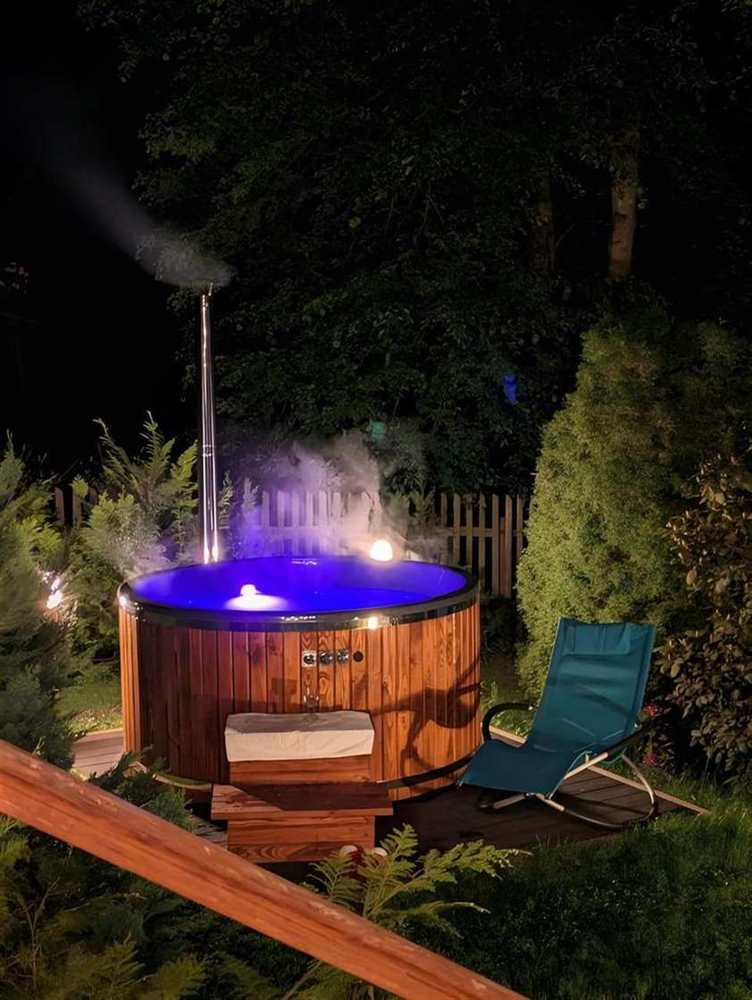
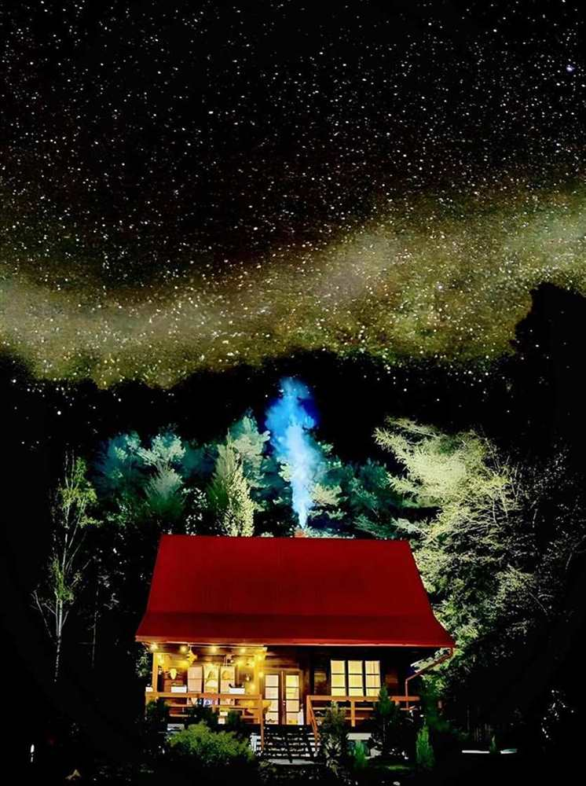

Nocny kadr domu
Mocny obraz do sekcji hero i materiałów social media.
Fotografie zostały przygotowane w wersji webowej i delikatnie podkręcone kolorystycznie, żeby strona wyglądała bardziej premium i jednocześnie ładowała się szybciej.
Mocny obraz do sekcji hero i materiałów social media.

Drewno i światło wzmacniają wrażenie jakości oraz przytulności.

Ujęcie budujące wartość weekendowych i romantycznych pobytów.

Zdjęcia, które dobrze pracują w sekcjach sprzedażowych i na podstronach SEO.

Naturalne osadzenie obiektu w regionie wzmacnia wiarygodność strony i lokalny kontekst SEO.